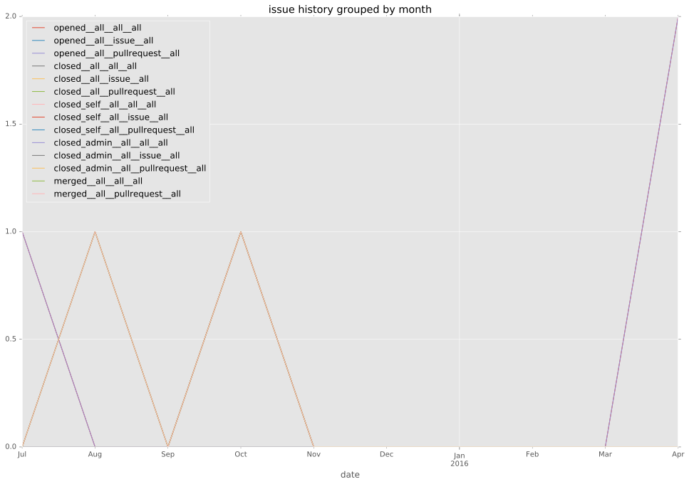
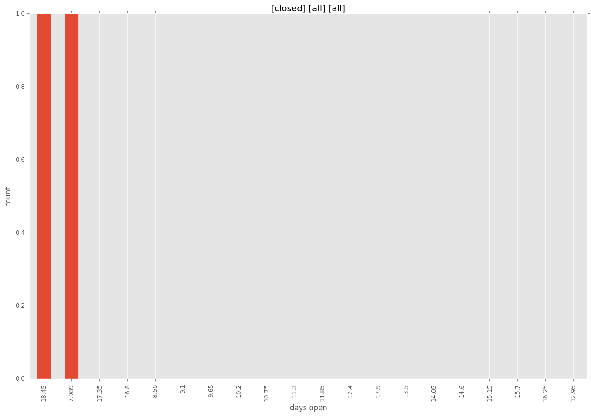
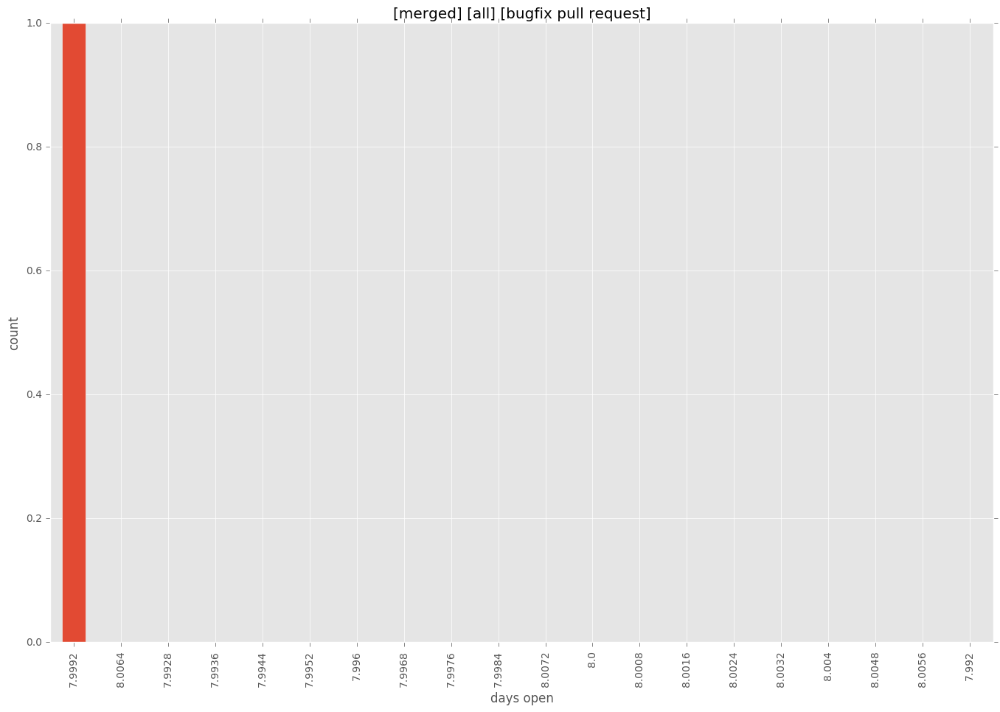
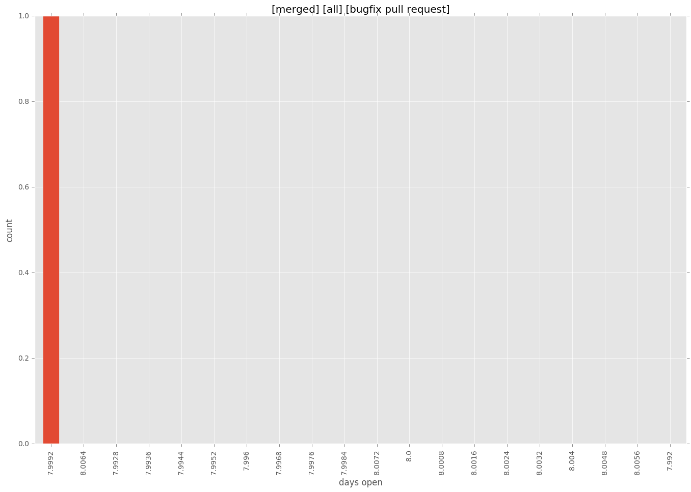

total issue counts
feature pull request: 1
bugfix pull request: 1
pullrequest: 4
new plugin: 2
issue history

days open by issue type
feature pull request
count: 0
std: nan
min: nan
max: nan
median: nan
mean: nan
bugfix pull request
count: 2
std: 0.0
min: 8
max: 8
median: 8.0
mean: 8.0
all
count: 4
std: 6.35085296109
min: 8
max: 19
median: 13.5
mean: 13.5
pullrequest
count: 0
std: nan
min: nan
max: nan
median: nan
mean: nan
new plugin
count: 2
std: 0.0
min: 19
max: 19
median: 19.0
mean: 19.0
closures grouped by total days open



 
